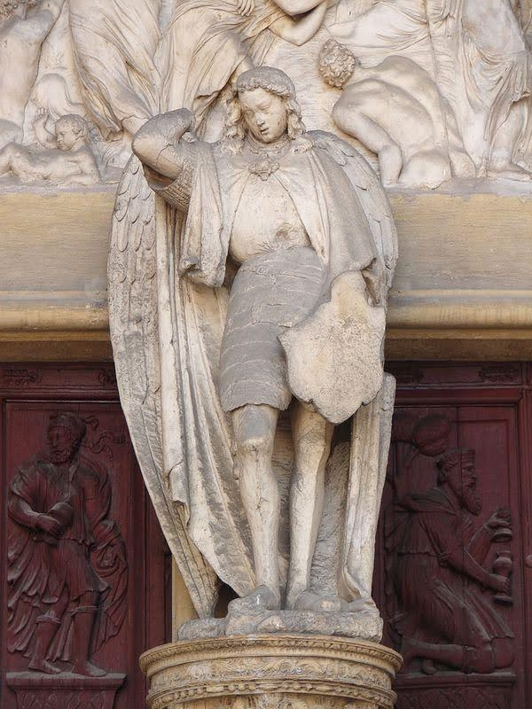

>

Saint Michel Archange
Défenseur du Peuple Dieu
Prière du Pape Léon XIII
Saint Michel Archange, défendez-nous dans le combat ; soyez
notre secours contre la malice et les embûches du démon. Que
Dieu lui fasse sentir son empire, nous vous en supplions. Et
vous, prince de la milice céleste, repoussez en enfer, par la
force divine, Satan et les autres esprits mauvais qui rôdent dans le
monde en vue de perdre les âmes. Amen.